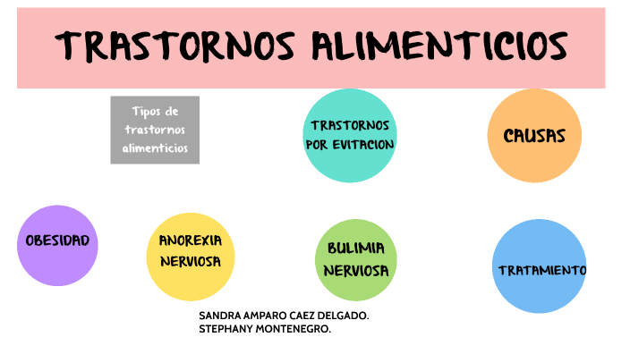
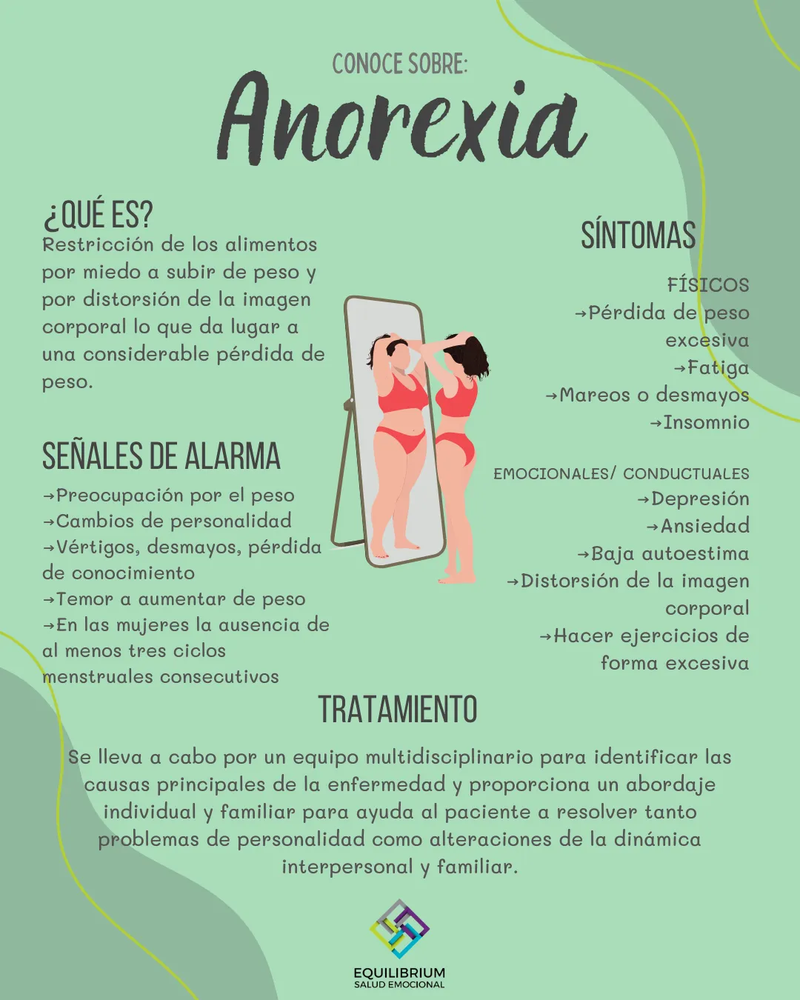
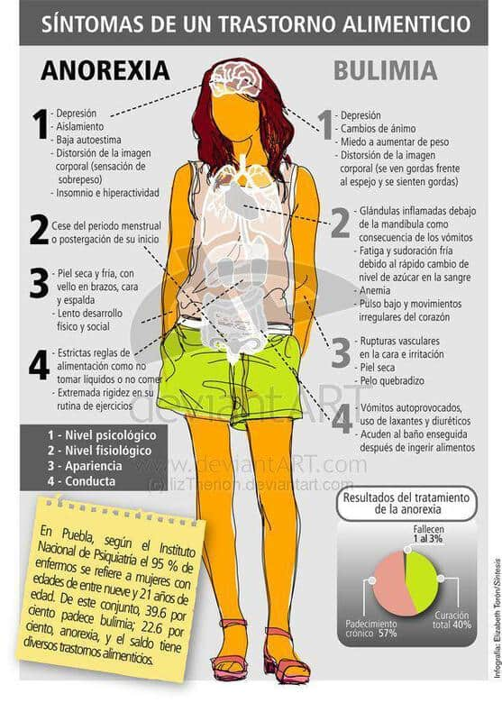

Actividad 1
Solución
Trastornos de la alimentación
Los trastornos alimentarios son tan comunes en Estados Unidos que 1 o 2 de cada 100 estudiantes tendrán problemas con uno. Los tipos más comunes de trastorno alimentario son la anorexia nerviosa y la bulimia nerviosa (generalmente llamados simplemente “anorexia” y “bulimia”; pero otros trastornos relacionados con los alimentos, como los trastornos por atracón, los trastornos de la imagen corporal y las fobias a los alimentos, están apareciendo con mayor frecuencia). de lo que solían hacerlo.

ANOREXIA
Las personas con anorexia tienen un miedo extremo a ganar peso y una visión distorsionada del tamaño y la forma de su cuerpo. Como resultado, no pueden mantener un peso corporal normal.
Algunas personas con anorexia restringen su ingesta de alimentos mediante dietas o ejercicio excesivo. Casi no comen nada y la pequeña cantidad de comida que comen se convierte en una obsesión. Otras personas con trastornos alimentarios hacen algo llamado atracones y purgas, donde comen mucha comida y luego intentan deshacerse de las calorías obligándose a vomitar, usando laxantes o haciendo ejercicio excesivo.

BULIMIA
La bulimia es similar a la anorexia. Con la bulimia, una persona come compulsivamente (come demasiada comida) y luego trata de compensarlo de formas extremas, como vómitos forzados o ejercicio excesivo, para evitar el aumento de peso. Con el tiempo, estos pasos pueden resultar peligrosos. Para ser diagnosticado con bulimia, una persona debe tener atracones y purgas con regularidad, al menos dos veces por semana durante un par de meses. Las personas con bulimia comen una gran cantidad de comida (a menudo comida chatarra) a la vez, normalmente en secreto. Por lo general, la persona se siente impotente para dejar de comer y sólo puede hacerlo cuando está demasiado llena para comer más

Actividad 2
BUSCA UNA IMAGEN QUE PUEDA IDENTIFICAR CADA UNO DE LOS PARRAFOS DE LA LECTURA ANTERIOR Y AGREGALO EN LA SOLUCIÒN DEL TRABAJO PROPUESTO
Actividad 3
A. Read the text and decide whether these sentences are true (T) or false (F). Correct the false ones.
1. A great number of American students will suffer from eating disorders.
(T) Verdadero. La lectura menciona que 1 o 2 de cada 100 estudiantes estadounidenses sufrirán de trastornos alimentarios.
2. Anorexia and bulimia are the only food-related disorders.
(F) Falso. La lectura menciona otros trastornos relacionados con la comida, como los trastornos por atracón, los trastornos de la imagen corporal y las fobias alimentarias.
Corrección: Anorexia and bulimia are not the only food-related disorders. There are also binge eating disorders, body image disorders, and food phobias.
3. Anorexics like their body.
(F) Falso. La lectura indica que las personas con anorexia tienen una visión distorsionada de su tamaño y forma corporal.
Corrección: Anorexics do not like their body; they have a distorted view of their body size and shape.
4. Some anorexics eat very little and do too much exercise.
(T) Verdadero. La lectura menciona que algunas personas con anorexia restringen su ingesta de alimentos mediante dietas o ejercicio excesivo.
5. Some bulimics try to lose their calories by exercising regularly.
(T) Verdadero. La lectura menciona que las personas con bulimia pueden intentar compensar comiendo en exceso mediante el ejercicio excesivo para evitar ganar peso.
B- Answer the following questions with complete sentences.
1. What are the symptoms of bulimia?
The symptoms of bulimia include eating large amounts of food in a short period, followed by extreme behaviors to avoid weight gain, such as forced vomiting, excessive exercise, or using laxatives.
2. When can we say that a person suffers from bulimia?
We can say that a person suffers from bulimia if they binge eat and purge regularly, at least twice a week for a couple of months.
3. Why do bulimics eat so much?
Bulimics eat so much because they feel a compulsion to binge eat, often consuming large amounts of food in secret. They typically feel powerless to stop eating until they are too full to eat anymore.
Actividad 4
EATING DISORDERS
• Why don't you...?
• Why don't you talk to a therapist about your eating habits?
• You should... / You shouldn't...
• You should seek professional help to understand the root causes of your eating disorder.
• You shouldn't ignore the symptoms and think they will go away on their own.
• How about going to...?
• How about going to a support group for people with eating disorders?
ANOREXIA
• Why don't you...?
• Why don't you discuss your feelings about your body with a trusted friend or family member?
• You should... / You shouldn't...
• You should follow a healthy meal plan created by a nutritionist.
• You shouldn't skip meals or exercise excessively.
• How about going to...?
• How about going to a clinic that specializes in treating anorexia?
BULIMIA
• Why don't you...?
• Why don't you keep a journal of your eating habits and emotions?
• You should... / You shouldn't...
• You should find healthier ways to cope with stress instead of binge eating and purging.
• You shouldn't use vomiting or laxatives as a method to control your weight.
• How about going to...?
• How about going to a counselor who has experience with bulimia?
Actividad 5
Healthy Habits
1. Exercise Regularly
o Suggestion:
We should exercise regularly because it keeps our body fit and healthy.
How about going for a run in the morning to start your day energetically?
Why don't you join a gym to stay active?
2. Eat Fruits and Vegetables
o Suggestion:
You should eat more fruits and vegetables to get essential vitamins and minerals.
How about making a salad for lunch?
Why don't you add a fruit to your breakfast every day?
3. Get Enough Sleep
o Suggestion:
We should get at least 7-8 hours of sleep each night for better health.
How about setting a regular sleep schedule?
Why don't you turn off electronic devices an hour before bed?
4. Stay Hydrated
o Suggestion:
You should drink plenty of water to stay hydrated.
How about carrying a water bottle with you throughout the day?
Why don't you drink a glass of water before each meal?
5. Practice Meditation or Yoga
o Suggestion:
We should practice meditation or yoga to reduce stress and improve mental health.
How about joining a local yoga class?
Why don't you try a short meditation session each morning?
Unhealthy Habits
6. Smoking
o Suggestion:
You shouldn't smoke because it is harmful to your lungs and overall health.
How about seeking help to quit smoking?
Why don't you replace smoking with a healthier habit like chewing gum?
7. Eating Junk Food
o Suggestion:
We shouldn't eat junk food regularly as it can lead to health problems.
How about cooking a healthy meal at home instead?
Why don't you prepare healthy snacks for when you get hungry?
8. Excessive Alcohol Consumption
o Suggestion:
You shouldn't drink too much alcohol because it can damage your liver and other organs.
How about drinking water or a non-alcoholic beverage instead?
Why don't you limit your alcohol intake to special occasions?
9. Having Poor Posture
o Suggestion:
We shouldn't slouch because it can cause back and neck pain.
How about using an ergonomic chair while working?
Why don't you practice good posture by keeping your back straight?
10. Spending Too Much Time on Screens
o Suggestion:
You shouldn't spend too much time in front of screens as it can strain your eyes.
How about taking regular breaks from screen time?
Why don't you go for a walk instead of watching TV?
Mixed Habits
11. Consuming Excess Sugar
o Suggestion:
We shouldn't consume too much sugar as it can lead to obesity and diabetes.
How about choosing fruits instead of sugary snacks?
Why don't you read labels to check for hidden sugars?
12. Avoiding Physical Activity
o Suggestion:
You shouldn't avoid physical activity because it is essential for maintaining health.
How about taking up a new sport or activity that you enjoy?
Why don't you take the stairs instead of the elevator?